두 가지만 미리 알아두세요.
① 1단계에서만 앞당겨 Claude를 씁니다. 저장소 복사는 MCP 없이도 되는 작업(git 명령)이라, 4단계에서 통로를 열기 전이어도 상관없습니다.
② 저장소를 Vercel 연결보다 먼저 만듭니다. 2단계에서 권한을 줄 때 가져올 저장소가 이미 있어야 그 자리에서 바로 고를 수 있습니다.
0단계Vercel 로그인 (GitHub로 가입)
0·2·3단계는 웹 화면에서 합니다. 계정 만들기와 저장소 연결은 사람이 직접 허락해줘야 하는 일이라 자동화되지 않습니다. (그 사이 1단계의 저장소 복사만 Claude Code에 부탁합니다.) 4단계부터는 전부 대화로 넘어옵니다.
저장소 접근 범위는 All repositories(전체) 또는 Only select repositories(특정 저장소만) 중 하나를 고릅니다.
Only select repositories를 골랐다면 목록에서 1단계에서 만든 vercel-test를 반드시 선택하세요. 빠뜨리면 다음 단계 목록에 안 보입니다.
자주 나는 함정 — 저장소를 가져오려 할 때 "To link a GitHub repository, you need to install the GitHub integration first" 라는 빨간 경고가 보이면, 그 저장소가 있는 계정(개인 계정 또는 조직)에 Vercel 앱이 아직 설치 안 된 것입니다. 위 1~3번처럼 그 계정에 Vercel을 한 번 설치하면 해결됩니다. 이 경고는 MCP로도 해결되지 않습니다.
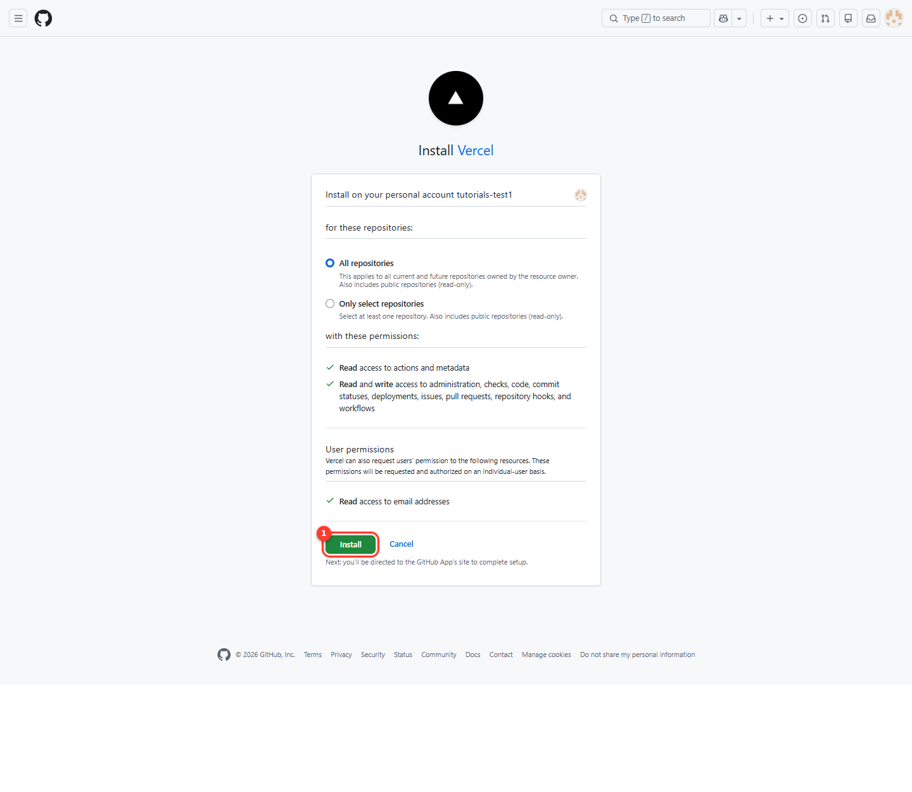
설치가 필요하다는 경고
3단계프로젝트 가져오기 (Import) + 배포
설치가 끝나면 Vercel 화면으로 돌아옵니다. Import Git Repository 목록에 1단계에서 만든 vercel-test가 보입니다. (화면이 닫혔다면 Add New… → Project로 다시 들어가면 됩니다.)
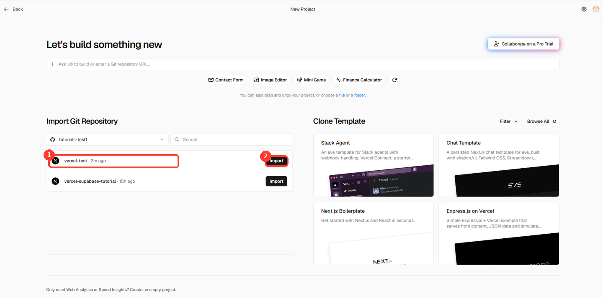
① 미러링한 vercel-test 저장소 ② Import 버튼
목록에 vercel-test가 안 보이면 2단계의 Vercel 앱 설치·접근 권한이 그 계정에 안 돼 있는 것입니다. 2단계로 돌아가 설치하거나, 접근 범위에 vercel-test를 추가해 주세요.
vercel-test 오른쪽의 Import(가져오기)를 누릅니다.
설정 화면은 대부분 그대로 두면 됩니다. (Project Name·Application Preset·Root Directory 모두 기본값)
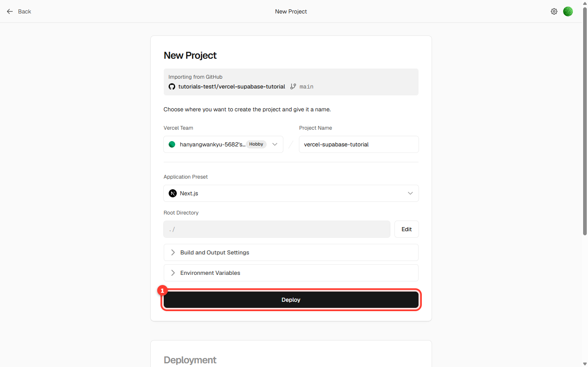
프로젝트 설정 화면
맨 아래 Deploy(배포)를 누릅니다. 빌드에 1~2분 걸립니다.
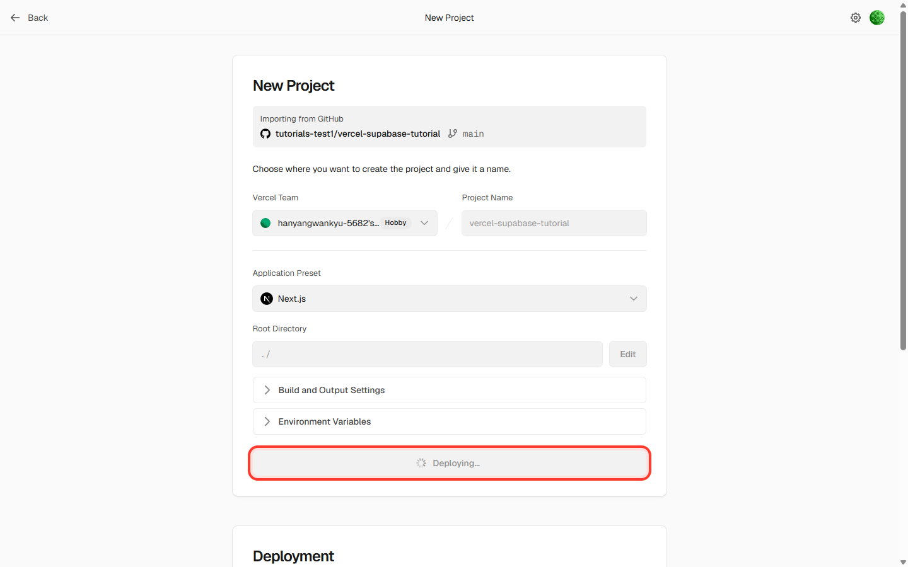
배포 진행 중
끝나면 Congratulations! 화면이 나옵니다. Continue to Dashboard를 눌러 우리 사이트 주소 ...vercel.app 을 확인합니다.
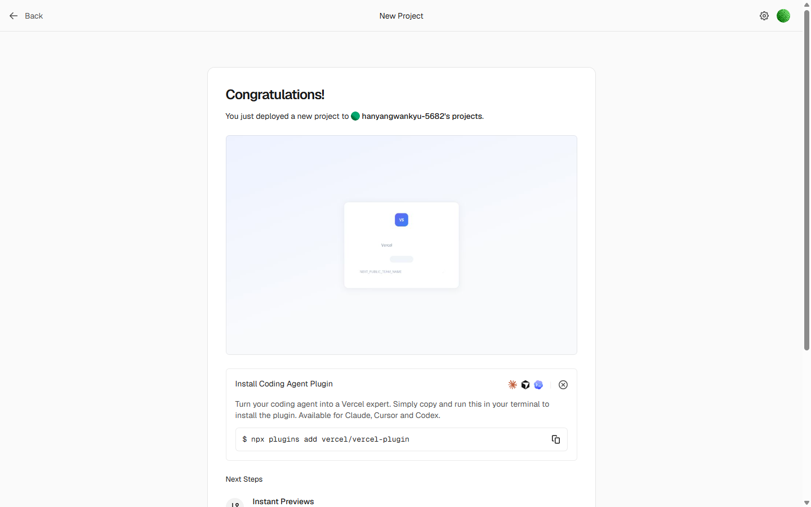
배포 성공 화면
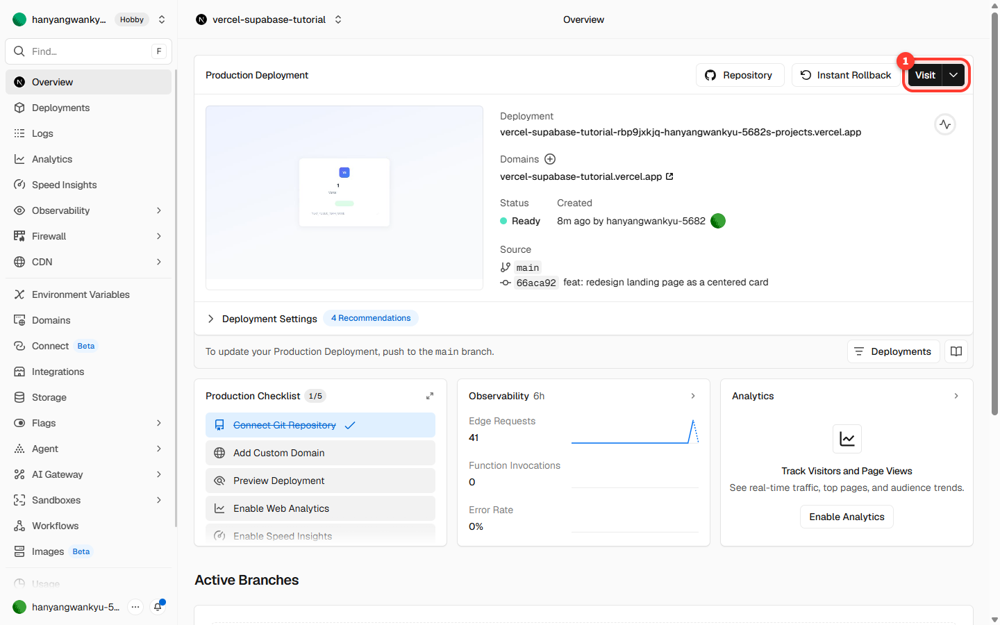
프로젝트 대시보드 — 여기서 사이트 주소를 확인합니다
지금 사이트를 열면 팀 이름이 "우리 팀 사이트"라는 기본값으로 보입니다. 5단계에서 환경변수를 넣어 바꿉니다. Vercel 대시보드에서 버튼을 누르는 건 여기까지입니다. (4단계에서 브라우저로 로그인 허용은 두 번 더 하지만, 대시보드를 뒤질 일은 없습니다.)
4단계통로 열기 (로그인 2가지 · 한 번만)
여기서 로그인을 두 번 합니다. 쓰임이 다르기 때문입니다. 둘 다 계정마다 한 번만 하면 되고, 다음 회차부터는 건너뜁니다.
4-1. Vercel MCP 연결 → 배포 상태·오류 로그를 읽는 통로
4-2. npx vercel login → 환경변수를 넣는 통로
왜 두 번인가요? — Vercel MCP에는 환경변수를 등록하는 기능이 없어서, 그 일만 명령줄 도구가 맡습니다. 로그인만 해두면 Claude가 두 가지를 알아서 나눠 씁니다.
4-1. Vercel MCP 연결
Claude Code 창에 아래를 입력합니다.
claude mcp add --transport http --scope user vercel https://mcp.vercel.com
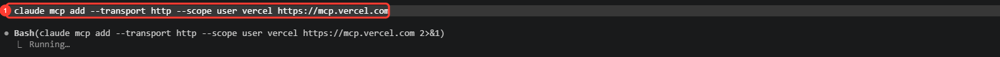
① 그대로 입력할 명령어
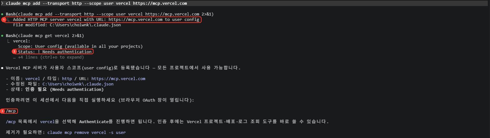
① 등록 성공 ② 아직 인증 전 상태 ③ 다음에 입력할 /mcp
Claude Code를 종료하고 claude --continue로 다시 시작합니다. (그냥 claude로 시작하면 대화 내용이 사라집니다.)
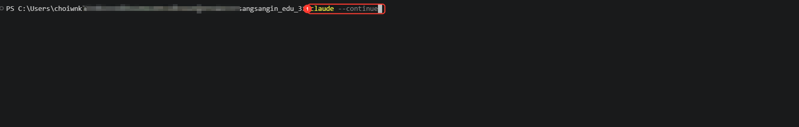
① 대화를 이어서 다시 시작하는 명령어
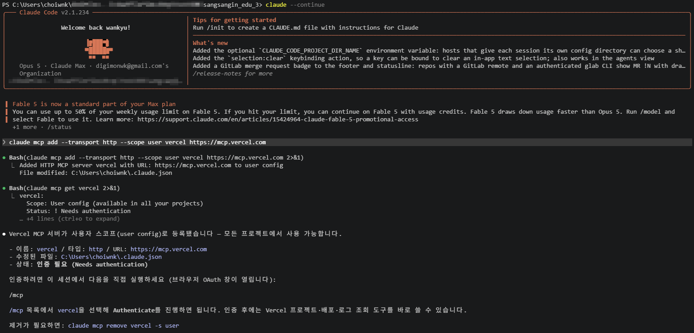
다시 시작해도 앞서 주고받은 내용이 그대로 남아 있습니다 — --continue를 빼면 이 부분이 사라집니다
/mcp를 입력하고 목록에서 vercel을 고릅니다.
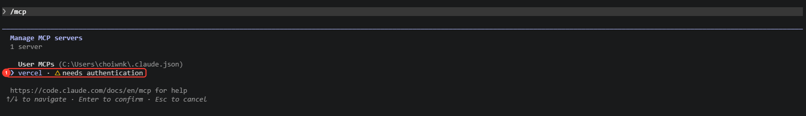
① 아직 인증이 안 된 vercel — Enter로 선택
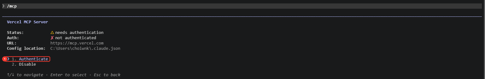
① Authenticate를 선택하면 브라우저가 열립니다
브라우저가 열리면 Vercel 계정으로 허용(Authorize)을 누릅니다.
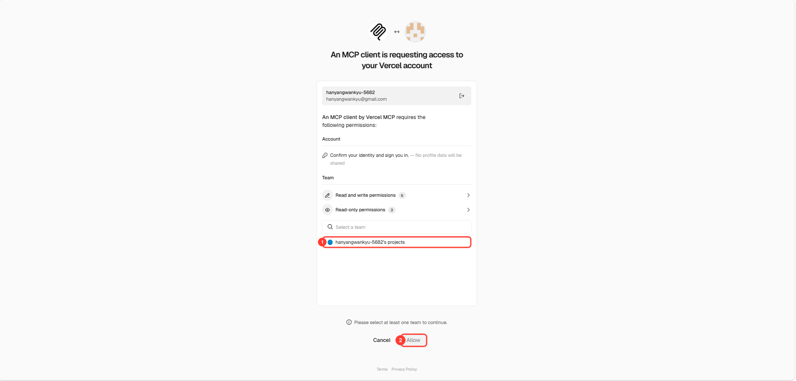
① 팀을 먼저 골라야 합니다 ② 고르기 전에는 Allow가 눌리지 않습니다
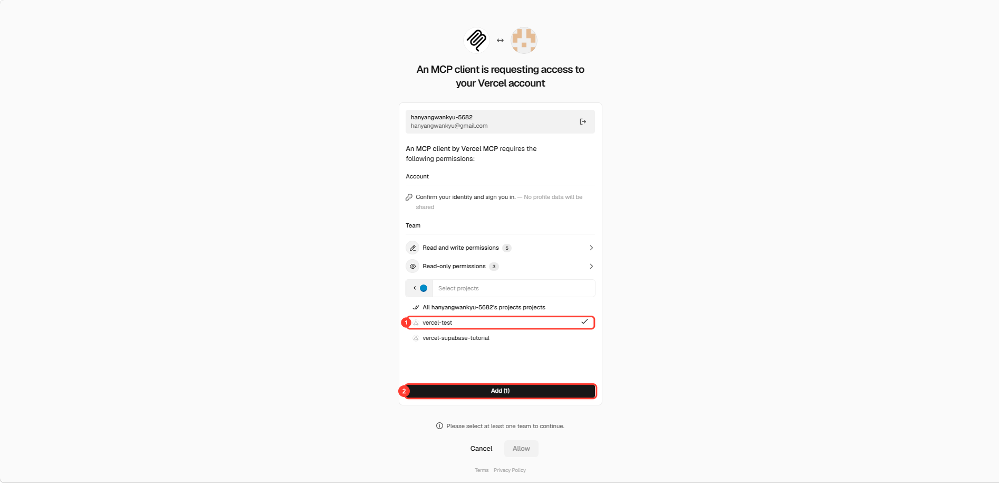
① 연결할 프로젝트를 고르고 ② Add를 누릅니다
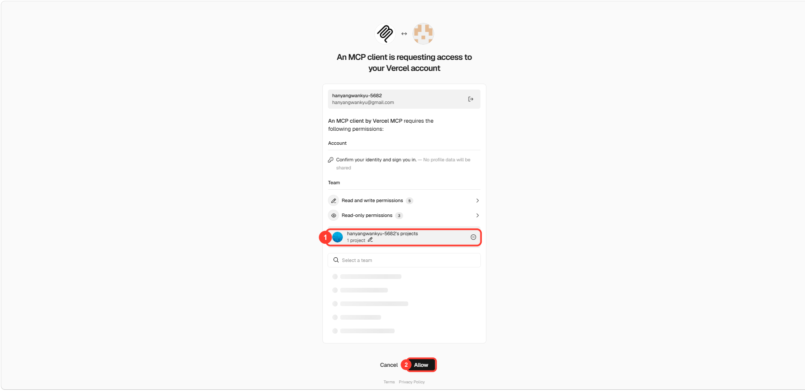
① 팀이 추가되면 ② Allow가 활성화됩니다
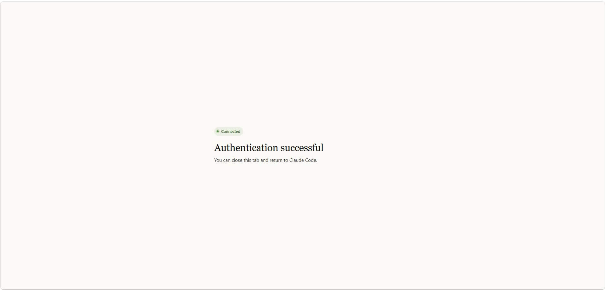
브라우저에 이 화면이 나오면 탭을 닫고 Claude Code로 돌아갑니다
Connected가 나오면 성공입니다.
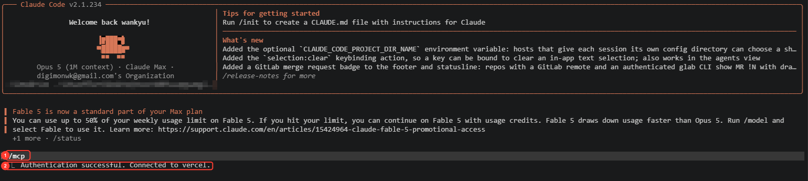
① /mcp ② Connected — 여기까지 나오면 통로가 열린 것입니다
목록에서 이름 찾기 — claude.ai Supabase처럼 claude.ai가 붙은 것들과 달리, 이건 그냥 vercel로 목록 맨 아래에 보입니다.
이 통로는 기본값으로 계정 전체를 봅니다. 팀이 여러 개라 범위를 좁히고 싶으면 안전하게 쓰기를 지금 보고 오세요. 수업용 계정 하나면 그대로 두어도 됩니다.
4-2. 명령줄 로그인
환경변수를 넣으려면 이 로그인이 필요합니다. 아래를 한 번 실행하고 브라우저에서 허용하세요.
npx vercel login
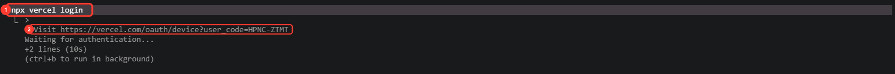
① 입력할 명령어 ② 브라우저로 열 주소 — 뒤에 붙은 코드를 확인해 둡니다
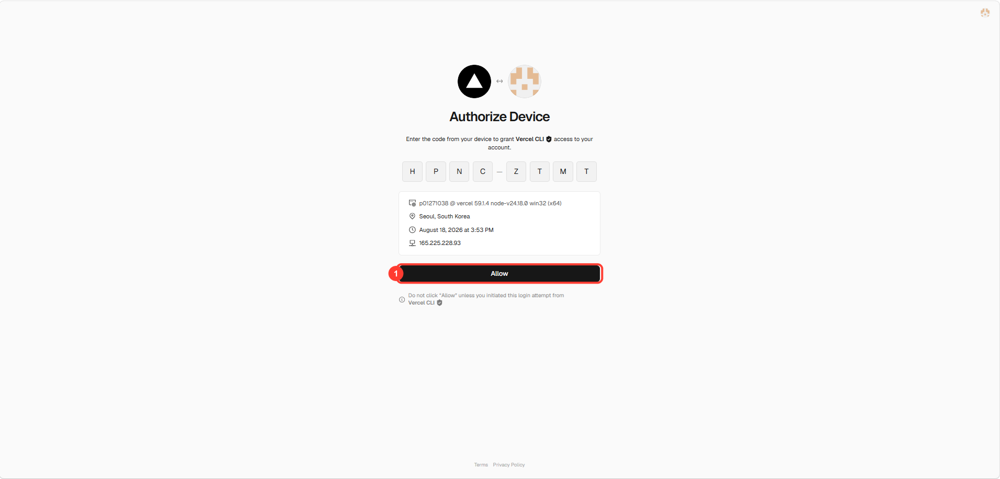
터미널에 나온 코드가 그대로 들어가 있는지 확인하고 ① Allow
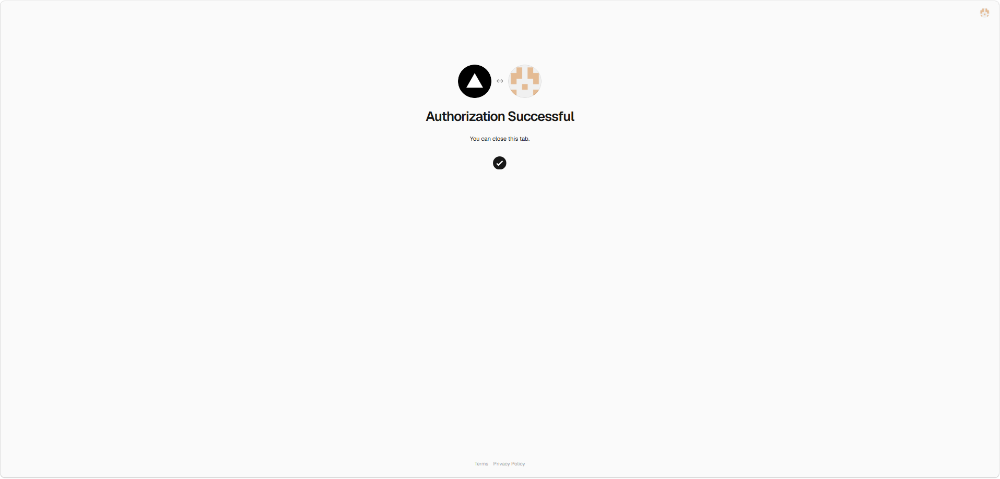
이 화면이 나오면 탭을 닫아도 됩니다
여기까지 됐으면 준비 끝입니다. 4-1의 Connected와 4-2의 로그인 완료 화면을 둘 다 봤다면, 이제부터는 Vercel 화면을 열 일이 없습니다. 남은 5~8단계는 전부 Claude Code 창에서 말로 합니다.
5단계환경변수 넣기
웹 버전에서 가장 오타가 많이 나는 구간입니다. 이름 한 글자만 틀려도 화면에 아무것도 안 나옵니다.
넣기 전 사이트는 이런 상태입니다.
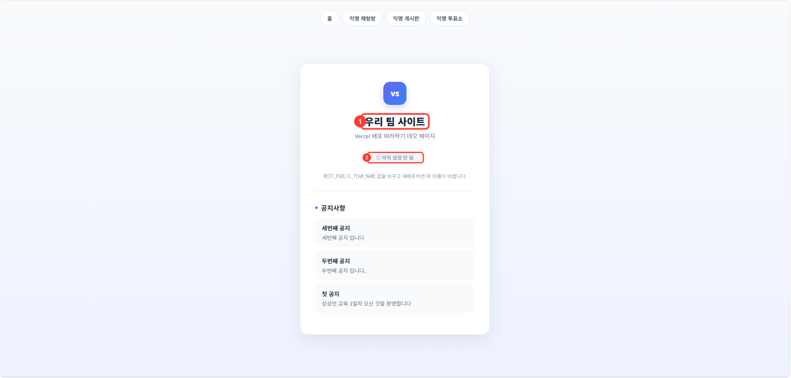
① 아직 기본값인 팀 이름 ② "아직 설정 안 됨" 표시
이 예제에서 넣을 값은 팀 이름 하나입니다. Claude Code 창에 이렇게 말합니다.
vercel 환경변수에 NEXT_PUBLIC_TEAM_NAME을 1조로 넣어줘
Claude가 등록하고 확인해 줍니다.
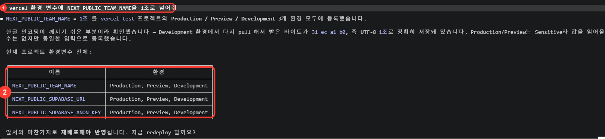
① 이렇게 말하면 ② 지금 들어가 있는 환경변수를 표로 보여줍니다
들어간 값을 확인하려면 이렇게 물어보세요. (값 자체는 가려져 나옵니다 — 정상입니다.)
지금 환경변수 뭐가 들어가 있어?
Supabase까지 연결하는 팀이라면 — 주소와 열쇠를 손으로 옮길 필요 없이 한 줄로 끝납니다. Supabase 따라하기 (MCP 버전)를 먼저 끝낸 팀만 해당됩니다.
우리 supabase 주소랑 열쇠를 vercel 환경변수에 넣어줘
① 이렇게 말하면 ② 두 값이 자동으로 등록됩니다 — 손으로 옮기지 않으니 오타가 없습니다
사람이 값을 옮기지 않으므로 철자 오타가 생기지 않습니다. 웹 버전 "자주 막히는 곳"의 1·4번(환경변수 철자, Vercel에만 없음)이 여기서 사라집니다.
6단계재배포
환경변수는 저장만으로는 화면에 반영되지 않습니다. 다시 배포해야 합니다. 웹 버전에서 가장 자주 잊는 단계입니다.
다시 배포해줘
production 배포를 시작했습니다. 1~2분 걸립니다.
지금은 여기까지 하고 7단계로 넘어가면 됩니다. 아래는 나중에 코드를 고칠 때 알아둘 내용입니다.
코드를 고쳤을 때는 재배포를 부탁할 필요가 없습니다. GitHub에 올리기만 하면 Vercel이 자동으로 다시 배포합니다. 1·2회차에서 쓰던 그 말이면 됩니다.
저장해줘
즉 환경변수만 바꿨을 때는 다시 배포해줘, 코드를 바꿨을 때는 저장해줘입니다.
7단계확인
배포 다 됐어?
Ready 상태입니다.
주소: https://우리프로젝트.vercel.app
사이트 주소를 새로고침해서 바뀐 내용이 보이면 성공입니다.
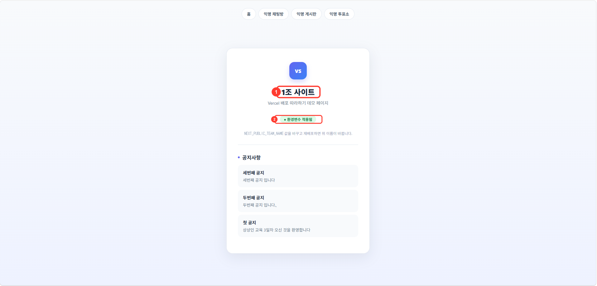
① 팀 이름이 바뀌었고 ② "환경변수 적용됨"으로 표시가 바뀌었습니다
다른 사람에게 보여줄 때 로그인 화면이 뜨면 배포 보호(Deployment Protection)가 켜진 것입니다. 배포 보호 설정 어떻게 되어 있어?라고 물어보세요. 켜져 있으면 소유자만 볼 수 있어 8교시 발표 때 곤란합니다. 강사에게 해제를 요청하세요.
8단계막혔을 때 (MCP 버전의 가장 큰 장점)
웹 버전에서는 배포가 실패하면 Vercel 대시보드를 열고 로그를 찾아 영어 오류 메시지를 읽어야 합니다. MCP 버전에서는 이렇게 물어보면 됩니다.
배포 왜 실패했어?
Claude가 빌드 기록을 직접 읽고 원인을 쉬운 말로 알려줍니다. 실제 예를 하나 보여드립니다. 이 교육 자료를 준비하면서 실제로 났던 오류입니다.
빌드가 이 오류로 멈췄습니다.
Module not found: Can't resolve '@/lib/supabase'
원인: 프로젝트에 TypeScript 파일이 하나 있어서 Next.js가 빌드 중
tsconfig.json을 자동으로 만듭니다. 그런데 자동 생성된 파일에는
경로 별칭(@/) 설정이 빠져 있고, 이 파일이 있으면 기존
jsconfig.json 설정은 무시됩니다. 그래서 '@/lib/supabase'를
찾지 못합니다.
고치려면 tsconfig.json에 별칭 설정을 넣고 저장소에 포함시켜야
합니다. 진행할까요?
이 오류는 첫 빌드는 성공하고 두 번째부터 실패하는 종류여서, 로그를 직접 읽어도 원인을 짚기 어렵습니다. 웹 버전이라면 강사를 불러야 하는 상황입니다.